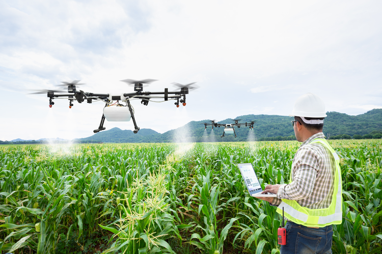
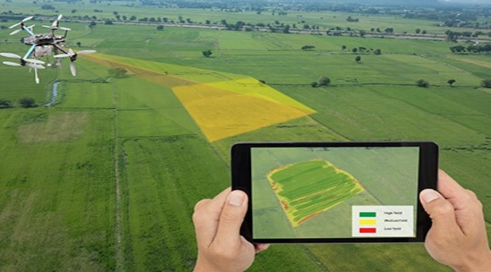

What are they?
Agriculture drones are unmanned aerial vehicles used to help optimize
agriculture operations, increase crop production, manage livestock and
monitor crop growth.
It erases the need for guesswork in modern farming and instead gives farmers
the ability to maximize their yields.
How they help?
Drones can be used to collect data related to crop yields, livestock health,
soil quality, nutrient measurements, weather and rainfall results, and more.
This data can then be used to get a more accurate map of any existing issues,
as well as create solutions based upon extremely reliable data.
Various drones have varied purposes but the main general areas of focus of agriculture drones are listed below.
- Soil and Field Analysis:By obtaining 3D maps of existing soil, you’ll be able to see if there are
any issues surrounding soil quality, nutrient management, or soil dead zones.
This information can help determine the most effective patterns for
planting, managing crops, soil, and more.
Ongoing monitoring can help to better utilize water resources, and more
effectively manage crop nutrient levels.
- Seed Planting:Drone planting is a relatively newer technology and not as widely used.
This helps to minimize the need for on-the-ground planting,
which can be costly, time-intensive, and strenuous work.
- Crop Spraying:Drones can be equipped with large reservoirs, which can be filled with
fertilizers, herbicides, or pesticides and sprayed on the farm.
It much safer and cost-effective.
For example, if there’s a fungus breakout in a certain section of the crops,
drones can be used to spot-treat the issue.
With the speed at which drones can operate, you can diagnose and treat
potential crop issues before they become a widespread issue across the
entire farm.
As per the provisions of Insecticides Act 1968, drone-spraying
(application of pesticides) is illegal in India without an approval
from the Central Insecticides Board (CIB).
More information here
- Crop Mapping and Surveying:

With near infrared (NIR) drone sensors you can actually determine plant
health based upon light absorption, giving you a birds-eye view of the
overall farm health.
- Irrigation Monitoring and Management:Drones that are equipped with thermal cameras can help to spot irrigation
issues, or areas that are receiving too little or excessive moisture.
With this information, crops can be better laid out to ensure proper irrigation.
- Real-time Livestock Monitoring:Drones equipped with thermal imaging cameras can monitor livestock with
less time and staff investment.
The drone operator can quickly check in on the herd to see if there are any
injured or missing livestock, as well as see the livestock that are giving
birth. Plus, they help in keeping an eye out for any livestock predators.
Cost?
Agriculture drones range from Rs. 3,00,000 to Rs. 10,00,000 based on capacity and requirement.